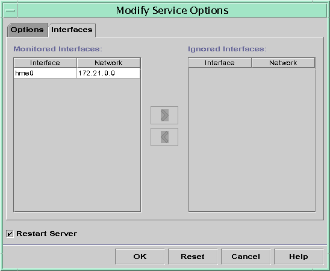
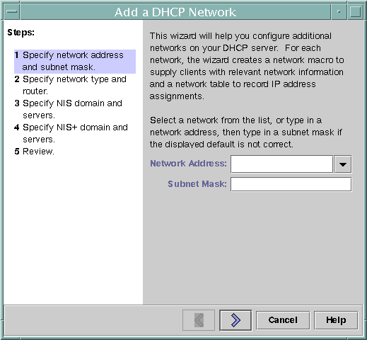
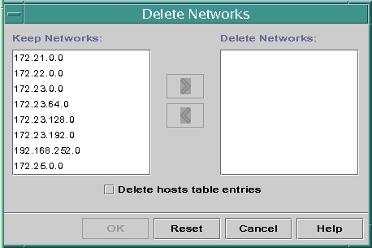

| Previous | Next |
1. Solaris TCPIP Protocol Suite (Overview)
2. Planning an IPv4 Addressing Scheme (Tasks
3. Planning an IPv6 Addressing Scheme (Overview)
4. Planning an IPv6 Network (Tasks)
5. Configuring TCP/IP Network Services and IPv4 Addressing (Tasks)
6. Administering Network Interfaces (Tasks)
7. Enabling IPv6 on a Network (Tasks)
8. Administering a TCP/IP Network (Tasks)
9. Troubleshooting Network Problems (Tasks)
10. TCP/IP and IPv4 in Depth (Reference)
12. About Solaris DHCP (Overview)
13. Planning for DHCP Service (Tasks)
14. Configuring the DHCP Service (Tasks)
15. Administering DHCP (Tasks)
How to Start and Stop DHCP Manager
Setting Up User Access to DHCP Commands
How to Grant Users Access to DHCP Commands
Starting and Stopping the DHCP Service
How to Start and Stop the DHCP Service (DHCP Manager)
How to Enable and Disable the DHCP Service (DHCP Manager)
How to Enable and Disable the DHCP Service (dhcpconfig -S)
DHCP Service and the Service Management Facility
Modifying DHCP Service Options (Task Map)
How to Generate Verbose DHCP Log Messages (DHCP Manager)
How to Generate Verbose DHCP Log Messages (Command Line)
How to Enable and Disable DHCP Transaction Logging (DHCP Manager)
How to Enable and Disable DHCP Transaction Logging (Command Line)
How to Log DHCP Transactions to a Separate syslog File
How to Enable Dynamic DNS Updating for DHCP Clients
How to Customize DHCP Performance Options (DHCP Manager)
How to Customize DHCP Performance Options (Command Line)
Adding, Modifying, and Removing DHCP Networks (Task Map)
How to Specify Network Interfaces for DHCP Monitoring (DHCP Manager)
How to Specify Network Interfaces for DHCP Monitoring (dhcpconfig)
How to Add a DHCP Network (DHCP Manager)
How to Add a DHCP Network (dhcpconfig)
How to Modify the Configuration of a DHCP Network (DHCP Manager)
How to Modify the Configuration of a DHCP Network (dhtadm)
Supporting BOOTP Clients With the DHCP Service (Task Map)
How to Set Up Support of Any BOOTP Client (DHCP Manager)
How to Set Up Support of Registered BOOTP Clients (DHCP Manager)
Working With IP Addresses in the DHCP Service (Task Map)
How to Add a Single IP Address (DHCP Manager)
How to Duplicate an Existing IP Address (DHCP Manager)
How to Add Multiple IP Addresses (DHCP Manager)
How to Add IP Addresses (pntadm)
How to Modify IP Address Properties (DHCP Manager)
How to Modify IP Address Properties (pntadm)
How to Mark IP Addresses as Unusable (DHCP Manager)
How to Mark IP Addresses as Unusable (pntadm)
How to Delete IP Addresses From DHCP Service (DHCP Manager)
How to Delete IP Addresses From the DHCP Service (pntadm)
How to Assign a Consistent IP Address to a DHCP Client (DHCP Manager)
How to Assign a Consistent IP Address to a DHCP Client (pntadm)
Working With DHCP Macros (Task Map)
How to View Macros Defined on a DHCP Server (DHCP Manager)
How to View Macros Defined on a DHCP Server (dhtadm)
How to Change Values for Options in a DHCP Macro (DHCP Manager)
How to Change Values for Options in a DHCP Macro (dhtadm)
How to Add Options to a DHCP Macro (DHCP Manager)
How to Add Options to a DHCP Macro (dhtadm)
How to Delete Options From a DHCP Macro (DHCP Manager)
How to Delete Options From a DHCP Macro (dhtadm)
How to Create a DHCP Macro (DHCP Manager)
How to Create a DHCP Macro (dhtadm)
How to Delete a DHCP Macro (DHCP Manager)
How to Delete a DHCP Macro (dhtadm)
Working With DHCP Options (Task Map)
How to Create DHCP Options (DHCP Manager)
How to Create DHCP Options (dhtadm)
How to Modify DHCP Option Properties (DHCP Manager)
How to Modify DHCP Option Properties (dhtadm)
How to Delete DHCP Options (DHCP Manager)
How to Delete DHCP Options (dhtadm)
Supporting Solaris Network Installation With the DHCP Service
Supporting Remote Boot and Diskless Boot Clients (Task Map)
Setting Up DHCP Clients to Receive Information Only (Task Map)
Converting to a New DHCP Data Store
How to Convert the DHCP Data Store (DHCP Manager)
How to Convert the DHCP Data Store (dhcpconfig -C)
Moving Configuration Data Between DHCP Servers (Task Map)
How to Export Data From a DHCP Server (DHCP Manager)
How to Export Data From a DHCP Server (dhcpconfig -X)
How to Import Data on a DHCP Server (DHCP Manager)
How to Import Data on a DHCP Server (dhcpconfig -I)
How to Modify Imported DHCP Data (DHCP Manager)
How to Modify Imported DHCP Data (pntadm, dhtadm)
16. Configuring and Administering DHCP Clients
17. Troubleshooting DHCP (Reference)
18. DHCP Commands and Files (Reference)
19. IP Security Architecture (Overview)
21. IP Security Architecture (Reference)
22. Internet Key Exchange (Overview)
24. Internet Key Exchange (Reference)
25. Solaris IP Filter (Overview)
28. Administering Mobile IP (Tasks)
29. Mobile IP Files and Commands (Reference)
30. Introducing IPMP (Overview)
31. Administering IPMP (Tasks)
Part VI IP Quality of Service (IPQoS)
32. Introducing IPQoS (Overview)
33. Planning for an IPQoS-Enabled Network (Tasks)
34. Creating the IPQoS Configuration File (Tasks)
35. Starting and Maintaining IPQoS (Tasks)
36. Using Flow Accounting and Statistics Gathering (Tasks)
Adding, Modifying, and Removing DHCP Networks (Task Map)
When you configure a DHCP server, you must also configure at least one network in order to use the DHCP service. You can add more networks at any time.
The following task map lists tasks that you can perform when working with DHCP networks. The task map includes links to procedures for carrying out the tasks.
Task |
Description |
For Instructions |
|---|---|---|
Enable or disable the DHCP service on server network interfaces |
The default behavior is to monitor all network interfaces for DHCP requests. If you do not want all interfaces to accept DHCP requests, you can remove an interface from the list of monitored interfaces. |
How to Specify Network Interfaces for DHCP Monitoring (DHCP Manager) |
Add a new network to the DHCP service. |
Places a network under DHCP management, for the purpose of managing IP addresses on the network. |
|
Change parameters of a DHCP-managed network. |
Modifies the information that is passed to clients of a particular network. |
How to Modify the Configuration of a DHCP Network (DHCP Manager) |
Delete a network from the DHCP service. |
Removes a network so that IP addresses on the network are no longer managed by DHCP. |
Specifying Network Interfaces for DHCP Monitoring
By default, both dhcpconfig and DHCP Manager's Configuration Wizard configure the DHCP server to monitor all the server system's network interfaces. If you add a new network interface to the server system, the DHCP server automatically monitors the new interface when you boot the system. You can then add any networks to be monitored through the network interface.
However, you can also specify which network interfaces should be monitored, and which interfaces should be ignored. You might want to ignore an interface if you do not want to offer DHCP service on that network.
If you specify that any interface should be ignored, and then install a new interface, the DHCP server ignores the new interface. You must add the new interface to the server's list of monitored interfaces. You can specify interfaces with DHCP Manager or the dhcpconfig utility.
This section includes procedures that enable you to specify which network interfaces DHCP should monitor or ignore. The DHCP Manager procedure uses the Interfaces tab of the DHCP Manager's Modify Service Options dialog box, which is shown in the following figure.
Figure 15-4 Interfaces Tab of Modify Service Options Dialog Box in DHCP Manager
How to Specify Network Interfaces for DHCP Monitoring (DHCP Manager)
- In DHCP Manager, choose Modify from the Service menu.
The Modify Service Options dialog box is displayed.
See How to Start and Stop DHCP Manager for information about DHCP Manager.
- Select the Interfaces tab.
- Select the appropriate network interface.
- Click the arrow buttons to move the interface to the appropriate list.
For example, to ignore an interface, select the interface in the Monitored Interfaces list, and then click the right arrow button. The interface is then shown in the Ignored Interfaces list.
- Select Restart Server, and click OK.
The changes you make persist across reboots.
How to Specify Network Interfaces for DHCP Monitoring (dhcpconfig)
- Become superuser or assume a role or user name that is assigned to
the DHCP Management profile.
For more information about the DHCP Management profile, see Setting Up User Access to DHCP Commands.
Roles contain authorizations and privileged commands. For more information about roles, see Configuring RBAC (Task Map) in System Administration Guide: Security Services.
- Type the following command on the DHCP server system:
# /usr/sbin/dhcpconfig -P INTERFACES=int,int,...
int, int,... is a list of interfaces to monitor. The interface names must be separated by commas.
For example, you would use the following command to monitor only ge0 and ge1:
#/usr/sbin/dhcpconfig -P INTERFACES=ge0,ge1
Interfaces that you want to ignore should be omitted from the dhcpconfig command line.
The changes you make with this command persist across reboots.
Adding DHCP Networks
When you use DHCP Manager to configure the server, the first network is also configured at the same time. The first network is usually the local network on the server system's primary interface. If you want to configure additional networks, use the DHCP Network Wizard in DHCP Manager.
If you use the dhcpconfig -D command to configure the server, you must separately configure all networks that you want to use the DHCP service. See How to Add a DHCP Network (dhcpconfig) for more information.
The following figure shows the initial dialog box for the DHCP Network Wizard in DHCP Manager.
Figure 15-5 DHCP Manager's Network Wizard
When you configure a new network, DHCP Manager creates the following components:
A network table in the data store. The new network is shown in the network list within the Addresses tab of DHCP Manager.
A network macro that contains information needed by clients that reside on this network. The network macro's name matches the IP address of the network. The network macro is added to the dhcptab table in the data store.
How to Add a DHCP Network (DHCP Manager)
- In DHCP Manager, click the Addresses tab.
Any networks already configured for DHCP service are listed.
See How to Start and Stop DHCP Manager for information about DHCP Manager.
- Choose Network Wizard from the Edit menu.
- Select options, or type requested information. Use the decisions that you made during
the planning phase to determine what information to specify.
Planning is described in Planning DHCP Configuration of Your Remote Networks.
If you have difficulty with the wizard, click Help in the wizard window. Your web browser displays help for the DHCP Network Wizard.
- Click Finish to complete the network configuration when you have finished specifying the
requested information.
The Network Wizard creates an empty network table, which is listed in the left pane of the window.
The Network Wizard also creates a network macro whose name matches the IP address of the network.
- (Optional) Select the Macros tab and select the network macro to view the macro's
contents.
You can confirm that the information that you provided in the wizard has been inserted as values for options in the network macro.
See Also
You must add addresses for the network before the network's IP addresses can be managed under DHCP. See Adding IP Addresses to the DHCP Service for more information.
If you leave the network table empty, the DHCP server can still provide configuration information to clients. See Setting Up DHCP Clients to Receive Information Only (Task Map) for more information.
How to Add a DHCP Network (dhcpconfig)
- Become superuser or assume a role or user name that is assigned to
the DHCP Management profile.
For more information about the DHCP Management profile, see Setting Up User Access to DHCP Commands.
Roles contain authorizations and privileged commands. For more information about roles, see Configuring RBAC (Task Map) in System Administration Guide: Security Services.
- Type the following command on the DHCP server system:
# /usr/sbin/dhcpconfig -N network-address
network-address is the IP address of the network you want to add to the DHCP service. See the dhcpconfig(1M) man page for suboptions you can use with the -N option.
If you do not use suboptions, dhcpconfig uses network files to obtain information about the network.
See Also
You must add addresses for the network before the network's IP addresses can be managed under DHCP. See Adding IP Addresses to the DHCP Service for more information.
If you leave the network table empty, the DHCP server can still provide configuration information to clients. See Setting Up DHCP Clients to Receive Information Only (Task Map) for more information.
Modifying DHCP Network Configurations
After you add a network to the DHCP service, you can modify the configuration information that you originally supplied. The configuration information is stored in the network macro used to pass information to clients on the network. You must modify the network macro to change the network configuration.
The following figure shows the Macros tab of DHCP Manager.
Figure 15-6 DHCP Manager's Macros Tab

How to Modify the Configuration of a DHCP Network (DHCP Manager)
- In DHCP Manager, select the Macros tab.
All macros that are defined for this DHCP server are listed in the left pane.
See How to Start and Stop DHCP Manager for information about DHCP Manager.
- Select the network macro whose name matches the network configuration that you are
changing.
The network macro name is the network IP address.
- Choose Properties from the Edit menu.
The Macro Properties dialog box displays a table of the options included in the macro.
- Select the option that you want to modify.
The option name and its value are displayed in text fields near the top of the dialog box.
- (Optional) Modify the option name, or choose the Select button to display a list
of option names.
The Select Option dialog box displays a list of all DHCP standard options, with a brief description of each option.
- (Optional) Select an option name in the Select Option dialog box, and click OK.
The new option name is displayed in the Option Name field.
- Type the new value for the option, and click Modify.
- (Optional) You can also add options to the network macro by choosing Select in
the dialog box.
See Modifying DHCP Macros for more general information about modifying macros.
- Select Notify DHCP Server of Change, and click OK.
This selection tells the DHCP server to reread the dhcptab table to put the change into effect immediately after you click OK.
How to Modify the Configuration of a DHCP Network (dhtadm)
- Become superuser or assume a role or user name that is assigned to
the DHCP Management profile.
For more information about the DHCP Management profile, see Setting Up User Access to DHCP Commands.
Roles contain authorizations and privileged commands. For more information about roles, see Configuring RBAC (Task Map) in System Administration Guide: Security Services.
- Determine which macro includes information for all clients of the network.
The network macro's name matches the network IP address.
If you don't know which macro includes this information, you can display the dhcptab table to list all macros by using the command dhtadm -P.
- Type a command of the following format to change the value of the
option you want to change:
# dhtadm -M -m macro-name -e 'symbol=value' -g
See the dhtadm(1M) man page for more information about dhtadm command-line options.
For example, to change the 10.25.62.0 macro's lease time to 57600 seconds and the NIS domain to sem.example.com, you would type the following commands:
# dhtadm -M -m 10.25.62.0 -e 'LeaseTim=57600' -g
# dhtadm -M -m 10.25.62.0 -e 'NISdmain=sem.example.com' -g
The -g option causes the DHCP daemon to reread the dhcptab table and put the changes into effect.
Removing DHCP Networks
DHCP Manager enables you to remove multiple networks at once. You have the option to automatically remove the hosts table entries associated with the DHCP-managed IP addresses on those networks as well. The following figure shows DHCP Manager's Delete Networks dialog box.
Figure 15-7 Delete Networks Dialog Box in DHCP Manager
The pntadm command requires you to delete each IP address entry from a network before you delete that network. You can delete only one network at a time.
How to Remove a DHCP Network (DHCP Manager)
- In DHCP Manager, select the Addresses tab.
See How to Start and Stop DHCP Manager for information about DHCP Manager.
- Choose Delete Networks from the Edit menu.
The Delete Networks dialog box opens.
- In the Keep Networks list, select the networks that you want to delete.
Press the Control key while you click with the mouse to select multiple networks. Press the Shift key while you click to select a range of networks.
- Click the right arrow button to move the selected networks to the Delete Networks list.
- If you want to remove the host table entries for this network's DHCP
addresses, select Delete Host Table Entries.
Note that deleting host table entries does not delete the host registrations at the DNS server for these addresses. Entries are deleted only in the local name service.
- Click OK.
How to Remove a DHCP Network (pntadm)
Note that this procedure deletes the network's IP addresses from the DHCP network table before removing the network. The addresses are deleted to ensure that the host names are removed from the hosts file or database.
- Become superuser or assume a role or user name that is assigned to
the DHCP Management profile.
For more information about the DHCP Management profile, see Setting Up User Access to DHCP Commands.
Roles contain authorizations and privileged commands. For more information about roles, see Configuring RBAC (Task Map) in System Administration Guide: Security Services.
- Type a command following this format to remove an IP address and its
host name from the name service:
# pntadm -D -y IP-address
For example, to remove IP address 10.25.52.1, you would type the following command:
# pntadm -D -y 10.25.52.1
The -y option specifies to delete the host name.
- Repeat the pntadm -D -y command for each address in the network.
You might want to create a script to run the pntadm command if you are deleting many addresses.
- After all addresses are deleted, type the following command to delete the network
from the DHCP service.
# pntadm -R network-IP-address
For example, to remove network 10.25.52.0, you would type the following command:
# pntadm -R 10.25.52.0
See the pntadm(1M) man page for more information about using the pntadm utility.
| Previous | Next |